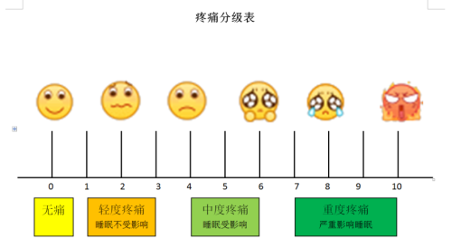
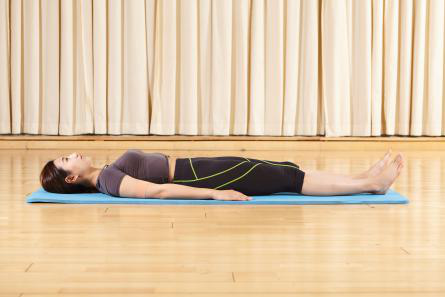
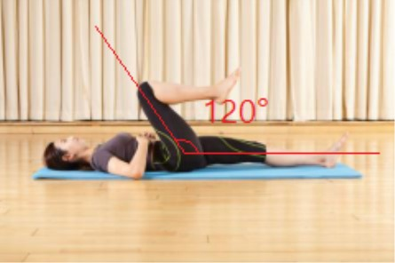
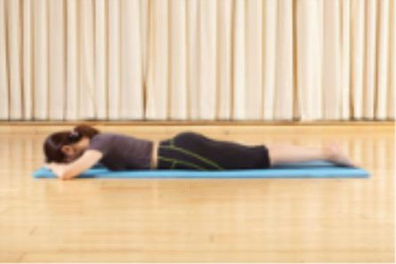
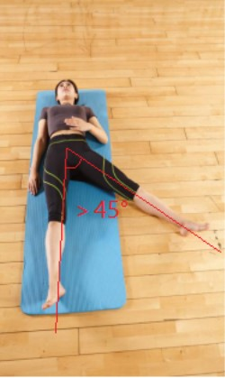

1
个人信息
姓名：
年龄：
性别：
男
女
身高：
（cm）
体重：
（kg）
2
风险筛查
1
疼痛VAS测评

请选择最佳能描绘出您疼痛程度的脸谱告诉医生
说明：0：无痛；1~3:轻度疼痛（睡眠不受影响）；4~6：中度疼痛（睡眠受影响）；7~10：重度疼痛（严重影响睡眠）。
大于等于5
小于5且次日无明显缓解
小于5且次日明显缓解
2
髋关节活动度测评--屈

受试者平躺于垫子上，一腿保持伸直。

另一腿屈髋，膝关节到达肚脐上方，屈髋角度大于120°为正常，小于120°为受限。
不受限
受限
3
髋关节活动度测评--伸

受试者俯卧于垫子上，双腿伸直，一腿向上抬起，膝关节抬离地面高度大于一拳
膝关节抬离地面高度大于一拳，两腿夹角大于15°为正常，小于15°为受限。
不受限
受限
4
髋关节活动度测评--外展

受试者俯卧于垫子上，双腿伸直，一腿向上抬起。
不受限
受限